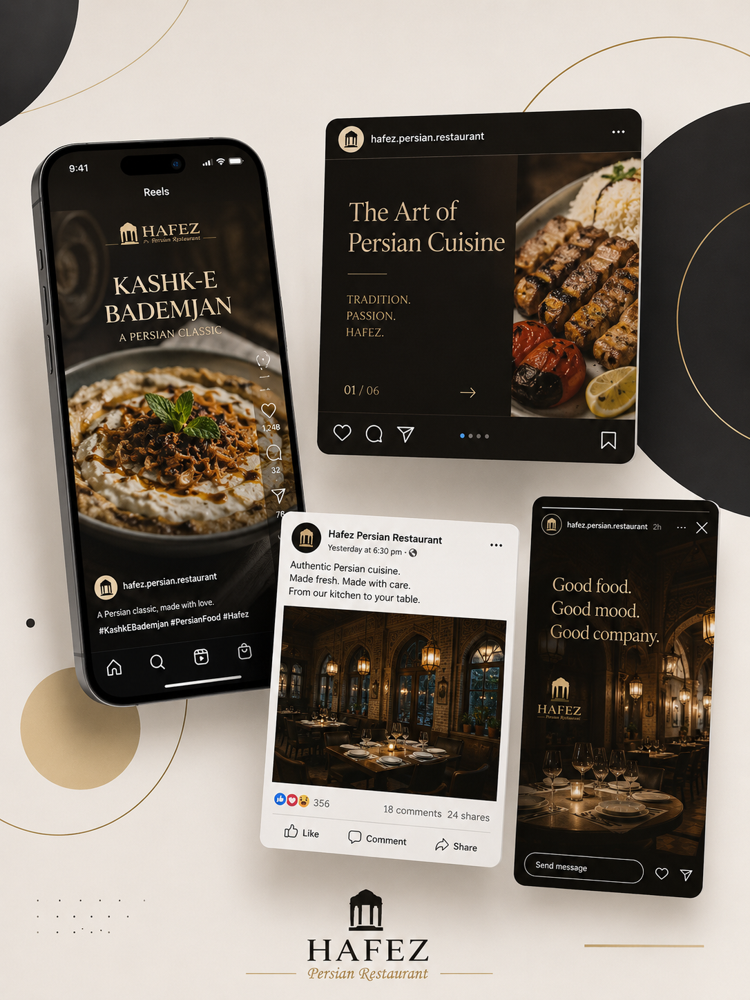

HOSPITALITY CONTENT
Hafez Persian Restaurant
Ongoing social media management for a Persian restaurant, built around authentic food storytelling, warm hospitality moments and a reliable content workflow the whole team can trust.

THE CHALLENGE
Turning great food into consistent, high-quality content
Hafez had strong word-of-mouth and an established following, but needed a dependable way to turn day-to-day restaurant life — dishes, service, atmosphere — into content that felt authentic rather than staged, and a technical workflow that kept video quality high from camera to post.
THE APPROACH
A dependable content engine, not just a content calendar
I manage the Instagram account end-to-end: planning content around new dishes and seasonal moments, shooting and editing short-form video, and writing captions that reflect the restaurant's voice. When video quality started dropping during handoff between devices, I traced the issue to an intermediate app recompressing files and rebuilt the workflow — from editing app, through email, to the phone used for posting — so every video reaches Instagram at full quality.
I also report on performance using Meta's own analytics, translating reach and engagement trends into a plain-language update the client can use in planning conversations.
- End-to-end Instagram content planning and posting
- Short-form video shooting and editing
- Rebuilt video workflow to eliminate quality loss
- Meta Insights performance reporting for the client
THE RESULT
Strong, sustained engagement
The account has grown a genuinely engaged local following, backed by data showing consistent reach and engagement growth — giving the restaurant a clear picture of what content is working and why.
Want content that actually sounds like your business?
I'd love to learn more about your business and explore how I can help.
Start a Conversation